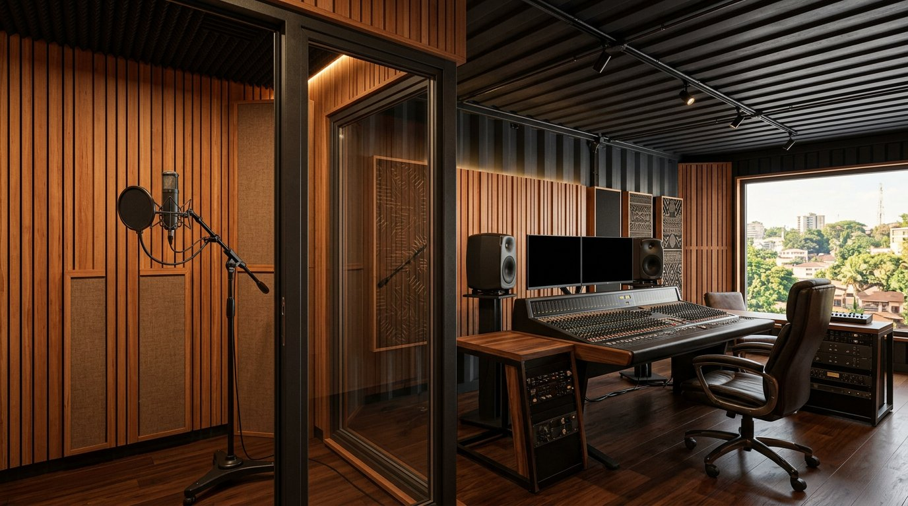
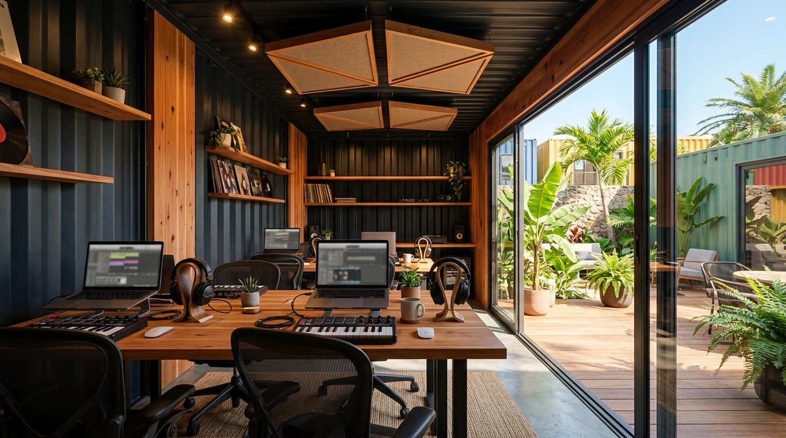

01
Space that is usable
Floating floors, isolated walls and treated ceilings. A room in which a vocal can be recorded at any hour, in a city that is never quiet.
Republic of Uganda
A public facility where Ugandan music is recorded, taught and turned into a livelihood.
A proposal submitted for the consideration of the Minister of Gender, Labour and Social Development
Submitted through the Office of the Minister. This document is a proposal for consideration; it is not an approved government project, a procurement document or a commitment of public funds.
Illustrative concept of the proposed facility — not an approved architectural design
Transmittal
Office of the Promoters
Uganda Creative Innovation Centre
Kampala, Uganda
15 November 2026
Hon. Lt. Gen. (Rtd) Henry Tumukunde
Minister of Gender, Labour and Social Development
Ministry of Gender, Labour and Social Development
Kampala
Honourable Minister,
We write to submit for your consideration a proposal to establish the Uganda Creative Innovation Centre (UCIC) — a public facility in Kampala where Ugandan musicians, producers and engineers can record, train and earn, and from which film, photography and creative enterprise programmes can later grow.
The proposal proceeds from a straightforward observation. Uganda's music is heard across the region, but the means of producing it are not widely available. A young producer with talent and a phone still has no quiet room, no maintained console and no one to show them how to use it. The constraint is infrastructure and instruction, not ability. That is the gap this proposal addresses.
It is submitted to your Ministry because the outcomes it seeks are the outcomes your Ministry is mandated to deliver: decent work for young people, economic participation by women, and opportunity for persons with disabilities. It is not proposed as a new bureaucracy. It is proposed as a shared production facility that existing Ministry programmes — the Youth Livelihood Programme, the Uganda Women Entrepreneurship Programme, the GROW project and the Social Assistance Grants for Empowerment — can direct their beneficiaries into, so that training and revolving credit are matched with somewhere to actually produce.
The document sets out the public case, the fit with the Ministry's mandate, the proposed facility, the programme model, an indicative establishment framework of UGX 3.0 billion, the governance safeguards we propose, and the specific decisions we respectfully request of you.
We would welcome the opportunity to present the proposal in person at your convenience, and to answer any question the Ministry may have on its assumptions, costings or structure.
Respectfully submitted,
For and on behalf of the Promoters
Uganda Creative Innovation Centre · Kampala
Contents
Executive summary
A UGX 3.0 billion establishment framework to create a national music and creative production facility in Kampala, opening with music and expanding into film, photography and creative enterprise over twenty-four months.
The Uganda Creative Innovation Centre is proposed as a professionally managed public facility in Kampala, built from modular container units around a covered courtyard. A first cluster of four containers opens the music programme: a studio and control room, a live band module, an isolated vocal booth and a beat lab. The full campus grows to approximately 1,000–1,200 m² as demand is proven. Access is supported by a structured training and mentorship programme and a fair booking system.
Access is free at the point of use for selected artists, producers and engineers, and subsidised for others through a published schedule. The facility is not a private studio or a closed membership club. It is a public platform with clear eligibility, transparent selection, published service standards and audited accounts.
Of the UGX 3.0 billion indicative envelope, UGX 650 million is music-specific. The framework assumes a secure, serviced plot held on a long-term lease or institutional arrangement, with the four containers craned into place; it does not assume land purchase or a conventional new-build. All figures are preliminary and require feasibility assessment, a bill of quantities and supplier quotations before any commitment.
The proposition in one sentence
Uganda already has the talent; what it lacks is a small number of properly built, properly run rooms where that talent can be trained and paid — and the Ministry already has the beneficiaries, the programmes and the mandate to fill them.
Section 1
Uganda's music is heard on every street, station and phone in the region. The capacity to produce it remains concentrated, expensive and largely informal.
A generation of Ugandan artists has demonstrated that the market for this country's music is regional and, increasingly, global. That success has been achieved largely without corresponding investment in the means of production. Recording capacity in Kampala is limited, uneven in quality and priced for those who already have income.
The consequences are practical. Sessions stall on faulty equipment. Vocal takes are recorded in rooms that let in traffic, generators and neighbours. Emerging producers learn by trial and error on equipment materially worse than the standard their work will be judged against. Talented people leave the sector not because they lack ability, but because the fixed cost of producing at a professional standard exceeds what they can carry alone.
Shared infrastructure resolves this in the same way it resolves it in other sectors: by separating the cost of the facility from the income of any one user. A single trained technician, one correctly isolated live room and one maintained console can serve hundreds of sessions a year. A cluster of four such rooms, sharing one courtyard and one team, does that at a fraction of what it would cost each producer to build alone.
The proposal is therefore deliberately modest in what it asks for and deliberately specific in what it delivers. It does not propose a national recording industry from scratch. It proposes a working facility, with the acoustic treatment, equipment and instruction that professional output actually requires — and a route from that facility into paid work.
01
Floating floors, isolated walls and treated ceilings. A room in which a vocal can be recorded at any hour, in a city that is never quiet.
02
A console, monitoring, microphones, outboard and a maintained computer — with a technician and a maintenance budget, so that a session does not end on a broken cable.
03
Producer development, engineering practice, artist coaching and mixing sessions — taught in the same rooms used for commercial work, so that standards stay honest.

Section 2
The Ministry does not need a new programme to make this work. It needs a production facility into which its existing beneficiaries can be directed.
The Ministry of Gender, Labour and Social Development already funds skills, capital and social protection for the exact constituencies this facility would serve. What those programmes cannot supply is a shared place to produce. UCIC is proposed as that missing layer — a common-user facility, not a competing programme.
| Instrument | Who it reaches | What it provides | What UCIC adds |
|---|---|---|---|
| Youth Livelihood Programme | Young people aged 18–30, organised in groups | Interest-free revolving funds, skills development and livelihood support | A production facility where funded youth groups can record, train and trade |
| Uganda Women Entrepreneurship Programme | Women aged 18–65, in groups of 10–15 | Interest-free revolving credit and enterprise training | Shared equipment and technical instruction that a group could not finance alone |
| GROW project | Women-led micro and small enterprises | Support to grow enterprises, including common-user facilities | A creative-sector common-user facility consistent with the GROW model |
| Social Assistance Grants for Empowerment | Vulnerable households and older persons | Direct income support and referral into services | An accessible route into creative work for household members |
Employment, not equipment
A console is not an outcome. A young person with a recorded catalogue, a booking, an income and a tax record is an outcome. Every element of this proposal is justified by its contribution to that end, and the measures in Section 6 are built around it rather than around installation.
Value created, not budget consumed
The centre is structured to generate institutional income from commercial bookings, training contracts and partnerships, which offsets the cost of free and subsidised access. It is intended to be a producer of value for the sector, not a recurring charge on the Ministry's vote.
On inclusion
The facility is proposed with physical accessibility, women's participation and youth employment as design requirements rather than aspirations. Access quotas, disaggregated reporting and an accessible building standard are set out in Sections 4 and 6.
Section 3
The centre is proposed in the modular form shown here: standard 40ft high-cube containers arranged around a covered timber courtyard. A first cluster of four containers opens the music programme; further containers are added as demand and resources are confirmed, up to a full campus of approximately 1,000–1,200 m².
01
Container modules are fabricated off site and craned into place, so fit-out and acoustic works run in parallel rather than in sequence. The first cluster can be recording before a conventional building would be out of the ground.
02
Each module is a discrete, repeatable unit with a known cost. Capacity is added a container at a time as bookings and programme demand justify it — instead of committing the full envelope before a single session is recorded.
03
If a site has to change, the modules are craned onto trucks and moved. That is a materially different risk profile from a fixed building, and it is why no site has to be locked in before the premises assessment is complete.
On the area figures in this document
Four 40ft high-cube containers yield roughly 120 m² of enclosed floor, plus the covered courtyard deck. The 1,000–1,200 m² figure referred to elsewhere in this document is the full campus at completion, not the first cluster. Both figures are used deliberately: the first is what the initial budget lines actually buy, the second is the space the site must be able to accommodate.
Container 01
One container split by a double-glazed acoustic window: vocal booth and live area on one side, console and monitoring on the other. Full band tracking at a larger module added later.
Container 02
A dedicated tracking container with variable acoustics and direct sightline to the control position — the first capacity increase once the studio container is running.
Container 03
A second isolated booth for vocals, voice-over and podcast work. Bookable by the hour, with an engineer on hand — the highest-throughput room in the cluster.
Container 04
Three mentored production stations opening onto the courtyard deck, where emerging producers learn on equipment better than what they have at home.

Premises strategy
Three routes will be compared before any property decision: an under-used government or institutional plot, a long-term lease of serviced land, and a public-private property partnership. Because the buildings are modular, the site requirement reduces to a secure, serviced plot of adequate size with vehicle access for a crane — not a specific building. No site has been selected.
Technical scope
The largest technical risk in a music facility is not the console; it is the room. Acoustic engineering, isolation and treatment are therefore budgeted as a distinct and protected line, and commissioned before equipment procurement, so that installed equipment performs to specification.
Section 4
Music is the sector with the widest reach, the lowest entry barrier and the clearest path from ability to income. It is therefore Phase 1 and takes the largest single equipment allocation.
01
Recording, production, mixing, mastering and artist development. Accessible professional rooms, equipment orientation, producer development, artist coaching, collaborative sessions and practical pathways into paid work.
02
Video production, editing, sound for picture, digital storytelling and commercial content — added once the facility's operating model is proven.
03
Shared photography facilities, lighting, visual communication, design practice, portfolio development and exhibition opportunities.
04
Creative software, music intelligence, intellectual property awareness, data tools, product testing and space for Ugandan technology innovators.
05
Practical training, mentorship, performance opportunities, business skills, market readiness, partnerships and pathways to sustainable creative enterprise.
Tier 1
Selected emerging artists, producers and engineers, and beneficiaries referred through Ministry programmes. Allocated by published criteria and a transparent selection panel.
Tier 2
Registered creatives, students and non-profit projects, on a published rate card below commercial market rates.
Tier 3
Labels, agencies, corporate and broadcast clients at market rates. This income offsets Tier 1 and Tier 2 access.
Why free access is a design requirement, not a subsidy
The beneficiaries this facility exists to reach cannot pay commercial rates, and will not be reached if the facility must recover all its costs from them. Free and subsidised tiers are therefore written into the operating model, funded by a defined mix of grant support, partnership contribution and commercial booking income — with the ratio reported annually.
Section 5
An indicative planning envelope for siting, fitting out and launching the four-container first cluster. It is not a land purchase, a conventional new-build estimate or a fully funded operating budget.
Total indicative establishment investment
UGX 3.0bn
Preliminary planning estimate, subject to feasibility, bill of quantities and supplier quotations.
Allocation by budget line
| # | Budget line | Scope | Amount | Share |
|---|---|---|---|---|
| Total indicative establishment investment | UGX 3,000m | 100.0% |
What this estimate excludes
Land purchase; a conventional new-build; financing costs; and a multi-year operating budget, which is addressed separately in the operating model. The estimate assumes a secure, serviced plot at a cost of occupancy to be confirmed during the site assessment.
Funding approach
Public support, private-sector contribution, development partners, equipment sponsorship and programme partnership are combined in sequence, with each stage releasing the next. The Minister is asked to champion and facilitate the project, not to finance it personally or from a single vote.
Procurement
No supplier, contractor or technology partner is selected by this document. All procurement would follow applicable public procurement rules, on the basis of a technical specification, a bill of quantities and competitive quotation or tender.
Section 6
A public facility holding public and partner resources must be auditable from the first cedi. These safeguards are proposed as conditions of establishment, not as later additions.
Traceability
Every shilling spent is intended to be traceable to a budget line, a procurement record and a delivered asset, and every asset to a maintained register. Where public money is spent, it should be possible to show what was bought, what it cost, who is responsible for it and what it produced.
Section 7
A phased sequence reduces risk, tests demand and allows the centre to open with a credible first set of services before later programmes are committed.
Phase 01 · 0–3 months
Stakeholder consultation, feasibility, premises assessment, governance design, technical brief and independent cost verification.
Phase 02 · 4–8 months
Secure premises, complete design and fit-out, procure priority music equipment, recruit and train the core technical team.
Phase 03 · 9–12 months
Open the priority studios and learning programmes, introduce fair booking, publish service standards and establish baseline metrics.
Phase 04 · 12–24 months
Extend into film, photography, creative technology and enterprise as resources, demand and operating performance justify.
Section 8
The proposal seeks guidance and facilitation to move from concept to a properly assessed, partner-backed implementation plan.
Annexes
| # | Budget line | Scope | Amount | Share |
|---|